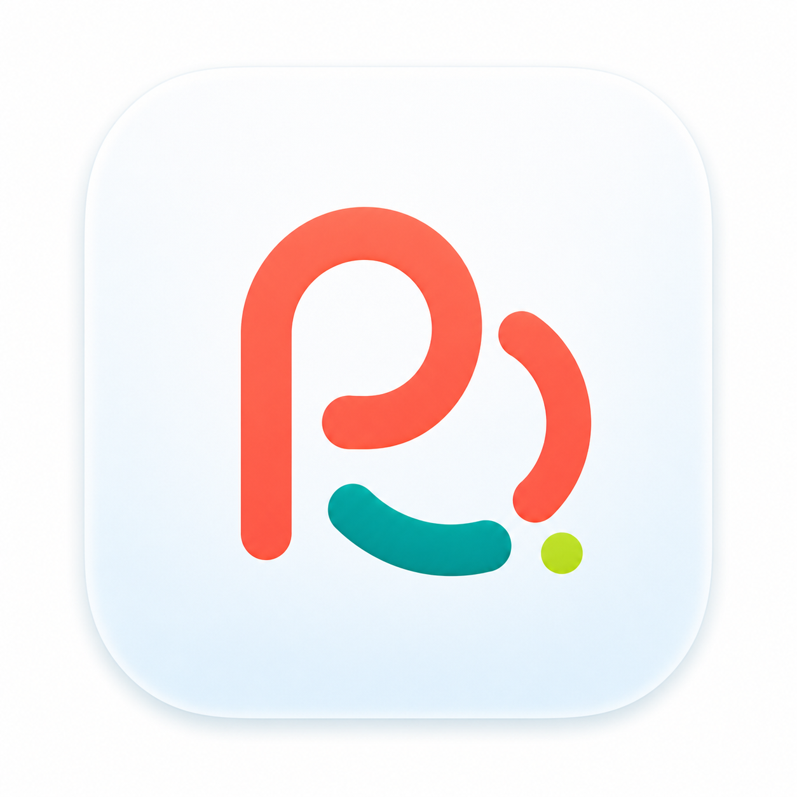

Final semi-flat mark
ใช้เป็น visual source หลักสำหรับ mockup, app icon trial และการ trace ต่อ

พอดี Pordee brand previewThai-first personal finance
Direction board สำหรับตรวจว่าแบรนด์ พอดี รู้สึกเป็นแอปการเงินประจำวัน: อ่อนโยน อ่านง่าย ใช้งานซ้ำได้ และไม่ดูเป็นธนาคารหรือแอปลงทุน
Logo system
ใช้ semi-flat PD mark ตัวนี้เป็น final visual direction ของแบรนด์ ก่อน trace/vectorize สำหรับ production
ใช้เป็น visual source หลักสำหรับ mockup, app icon trial และการ trace ต่อ
ใช้ตรวจขอบและพื้นที่ก่อนทำ transparent cutout หรือ vector trace
ใช้ตรวจว่า sky tile และ coral stroke ยังชัดบนพื้นเข้ม
Color tokens
เพิ่มรายการ จ่ายเงิน action state
รายรับ balance และ positive progress
จุด milestone เล็กเท่านั้น
พื้นหลังที่ทำให้แอปเบาและสงบ
ตัวอักษรหลักและจำนวนเงิน
Product mockups
ชุดนี้ตั้งใจเป็น mockup สำหรับตัดสินใจ brand feel ก่อนเริ่ม scaffold แอปใหม่
ยังอยู่ในจังหวะพอดี ใช้ได้เฉลี่ยวันละ 614 บาท
หมวดอาหารสูงกว่าค่าเฉลี่ยเล็กน้อย แต่ภาพรวมเดือนนี้ยังสมดุล
Mascot states